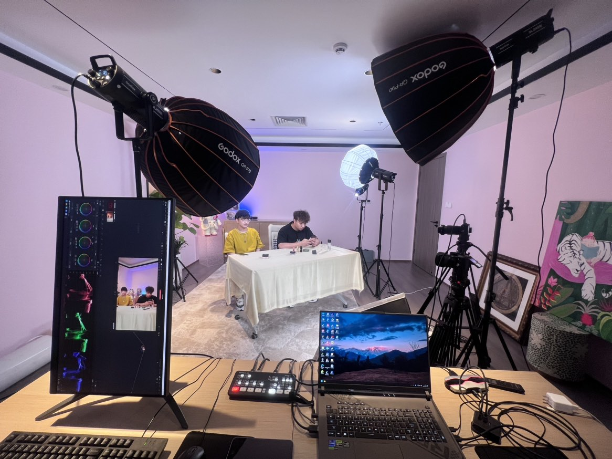
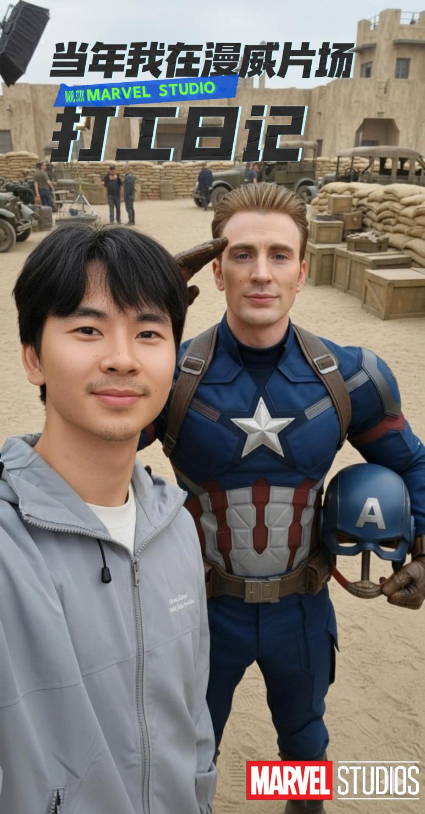

你好👋, 我是
戴雅
用真实的镜头讲故事， 用 AI 提高生产力。


品牌纪实

现象级直播案例

AI影像

个人创作
品牌纪实
现象级直播案例
AI影像
个人创作
关于我
Hi, I'm 戴雅.
我是戴雅。一名专注影视工业化制作的视觉创作者，拥有 3 年一线实战经验。
我习惯使用Sony相机配合达芬奇（DaVinci Resolve）完成视觉创作。过去三年，我深度参与了多个商业项目的全链路制作，从 4K 多机位现场直播到后期的精细化调色，我始终坚持用高标准的工业逻辑去交付视觉作品。
我正在将 AI 引入我的核心工作流。对我而言，AI 不是简单的滤镜工具，而是一个能帮我跳过重复劳动、让我能腾出更多精力去打磨"叙事效果"的视觉杠杆，这个网站就是AI的实践成果。
我没有浮夸的履历，只有在每一个项目中踏实交付的实战经验。
个人作品
音乐 MV / 品牌形象
《篇章》音乐MV
以旋律为载体，串联企业三年的成长心路。不仅是一次周年纪念，更是通过影像化的情感叙事，将企业的发展轨迹转化为听得见的共鸣。
视觉制作 / IP 孵化
百万级教育 IP：全链路视觉制作
负责教育 IP 的视觉体系建设。从直播间光影环境搭建、标准机位布光，到短视频内容的视觉拍摄及后期包装，确保 IP 在多终端输出下的视听规格统一与品牌辨识度。

企业纪录片 / 品牌宣传
十方融海：以人为本·创新教育
当公司需要传达使命、愿景与价值观时，比起生硬的宣讲，真实的声音更有力量。我负责通过镜头捕捉 CEO 的真实独白，将企业的战略宏图转化为有温度的文化共识。

户外纪实 / 个人创作
四姑娘山徒步混剪
高海拔徒步纪实。拍摄于四姑娘山 5000 米海拔，结合无人机全景与手持贴身跟拍，通过对零散素材的处理；通过精准匹配音乐节奏的剪辑处理，将碎片化的户外片段拼合为连贯、具有节奏感的视觉作品。
AI 视觉 / 趣味创意
漫威片场打工日记
AI 视觉创意实验。利用 nano banana 将个人照片与漫威电影场景进行合成，再通过 keling 进行视频的生成；重点在于后期光影调校与透视匹配，模拟出真实的片场合照状态。

年会回顾 / 年度总结影像
星崆宣传片
串联一年的奋斗痕迹，从点滴的现场记录到完整的品牌轨迹，以影像力量激发团队共鸣，定格企业的成长记忆。

课程包装 / 教学影像
声音课程
将晦涩的语音知识转化为直观的视听语言。通过节奏化的字幕引导与动态包装，让学习者在流畅的视听节奏中，掌握表达的自然感。

访谈剪辑 / 综艺感剪辑
梨花面对面
摆脱平铺直叙的访谈套路。运用综艺感剪辑技巧，将对话转化为充满张力的叙事；通过反应镜头与节奏调控，挖掘人物在深度对谈中最真实的瞬间。
户外vlog / 个人创作
《我的第一座雪山》
高海拔徒步纪实。整理了从出发到登顶的零散素材，通过旁白引导剪辑节奏，将破碎场景串联。后期重点在于对高原强光下的高光细节进行色彩还原。

产品视频 / 商业广告
PREETO 电动自行车短片
针对 PREETO 电动自行车品牌升级，后期通过声音设计与快节奏剪辑增强动能感，精准匹配产品的高性能属性。通过可灵AI进行画面扩展与智能补帧，从而突破素材限制，实现了极度平滑的“无缝转场”的效果。
现场导播 / 硬件工程
4K 多机位实时直播
针对高并发 4K 直播环境进行多机位信号接入。负责导播流控制、实时色彩科学配置及直播现场声学管理，确保长时间推流的稳定性与视听规格的高质量统一。

活动快剪 / 社交短视频
梨游学快剪
线下活动最难捕获的不是现场的人数，而是那一刻的"情绪浓度"。在这部快剪作品中，我试图通过紧凑的视听剪辑，让观众即使不在现场，也能瞬间被那份属于"梨游学"的热情与氛围所感染。
个人作品/荣誉
核心影像技术
精通 4K 多机位系统搭建与后期色彩管理，拥有 DaVinci 国际认证调色师/剪辑师资质。始终坚持以工业级标准交付商业视觉，保障高曝光项目的高端质感。
AI 生产力
- 终端自动化中台： 基于 OpenClaw + Python 构建跨平台素材自动抓取与结构化归档。
- 全链路视频生成： 结合 Nano Banana 高保真分镜与 Kling 视频生成，落地商业级 AI 视觉资产。
- 大模型商业落地： 熟练运用 Gemini/ChatGPT 进行多模态混合创作与脚本结构化拆解。
叙事执导
专业领域
全链路视觉方案
制作能力
AIGC + 4K 多机位
具备强烈的商业转化嗅觉，将商业诉求精准转化为视觉语言。通过“AI 自动化提效 + 电影级后期交付”双擎驱动，提供从策划到落地的全栈执导。
商业战绩与荣誉
单场直播 GMV 突破 300 万
直播视觉全流程搭建与 DaVinci 实时电影级调色调优。
六个月 0 成本涨粉 100 万+
主导“宋雨”IP 全链路视觉方案与标准化制片流。
极客与学术双重认可
获第十四届大广赛国家级优秀奖/省级二等奖；具备独立搭建个人生产力 AI Agent 的极客能力。
就这些了，朋友们👋
想了解更多关于我的信息吗？